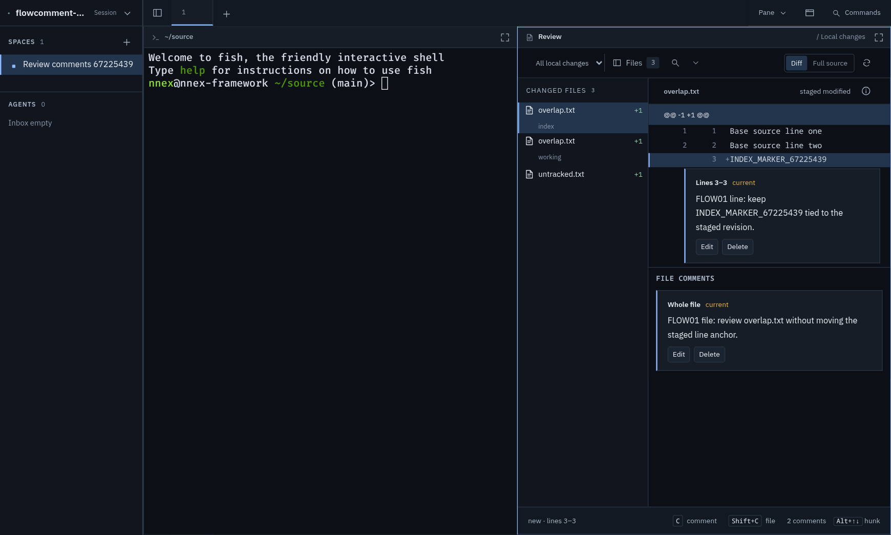
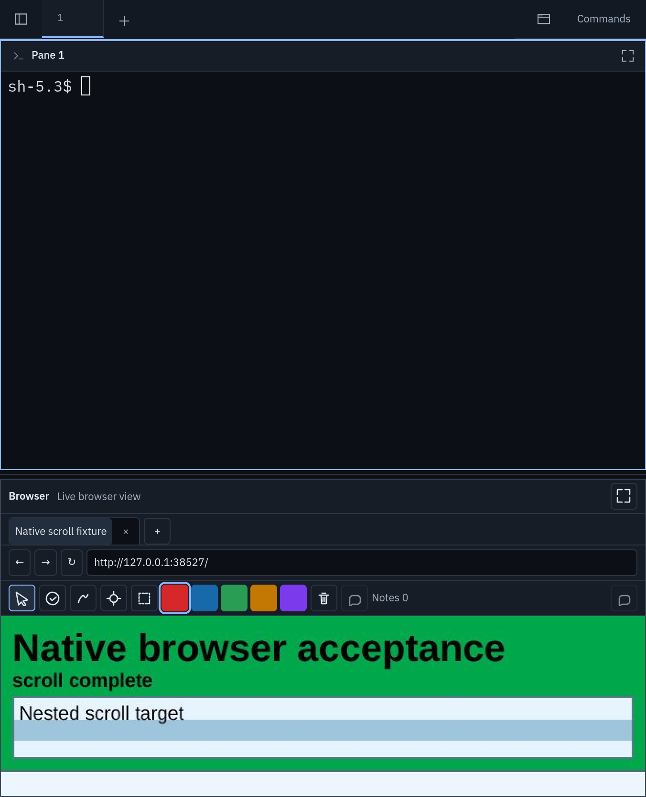
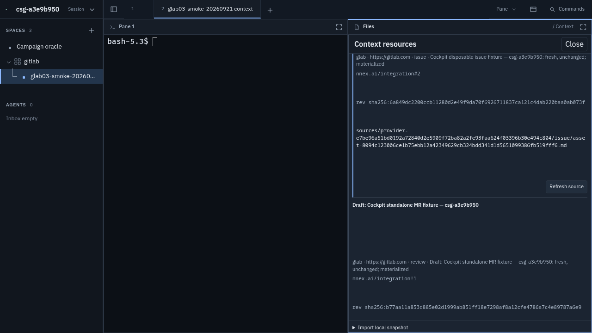
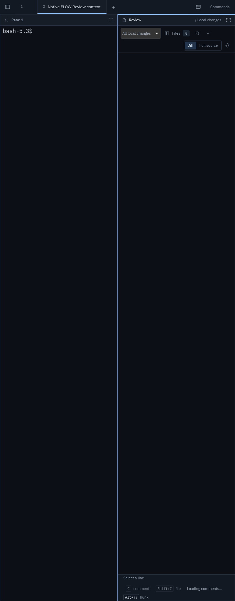
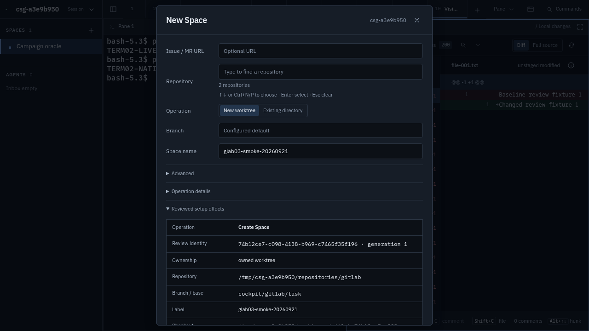
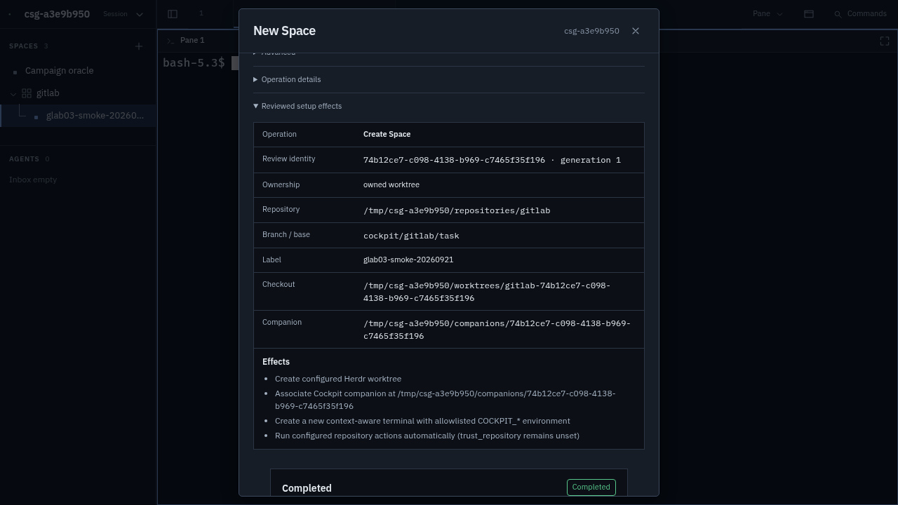
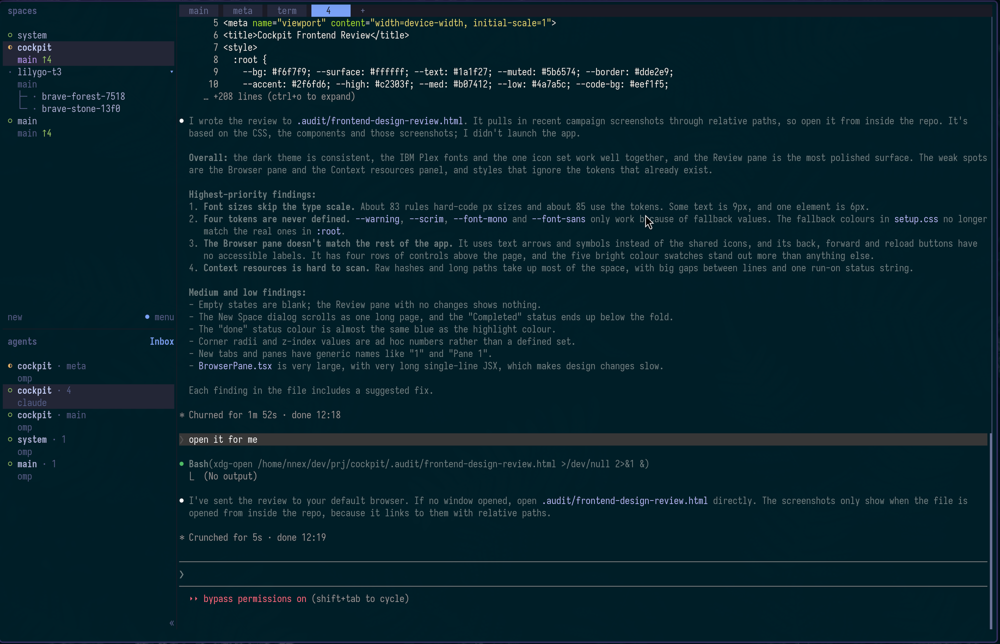

Cockpit frontend review
- Fix first: route font sizes and colours through tokens (#1, #2), bring the Browser pane chrome in line with the rest (#3), and redo the Context resources layout (#4).
- Herdr parity: Cockpit's shared parts show less than Herdr's while using more space. Bring the sidebar to Herdr's level of detail (H1), cut chrome (H2), and match status glyphs and terminal colours (H3, H4).
- Then: add empty states (#5), tidy the setup dialog flow (#6), and the smaller polish items.
What works well
- Coherent palette. Blue-grey surfaces go from
--app-bgto--surface-selectedin small steps, with one accent colour. Nothing clashes. - Good font pairing. IBM Plex Sans and Mono are self-hosted through
@fontsource, andfont-synthesis: noneis set. - One icon system.
UiIcon.tsxuses inline 24px stroke paths at weight 1.6. The icons look alike and stay lightweight. - Keyboard basics are in place. Controls get
:focus-visibleoutlines, and there areprefers-reduced-motionblocks. The Review and Context footers show keyboard hints (Ccomment,Shift+Cfile,Alt+↑↓hunk). - The Review pane looks good. The file list, diff, inline comment cards with a "current" freshness tag, and file comments form a clear hierarchy.

Findings
High 1. Most font sizes skip the type scale
:root defines a rem scale from --font-size-2xs to --font-size-2xl. About 85 rules use it, and about 83 rules hard-code px values: 12px ×25, 11px ×25, 10px ×14, 9px ×4, and one 6px (.connection-mark, styles.css:2302). The 9px uppercase labels are hard to read at normal viewing distance: .command-group h3 and .document-source-kind (viewer.css:381, the "FILE" label in Context).
Fix: replace the px literals with scale tokens. Make --font-size-2xs (11px) the smallest text size. If 10px is really needed, add it as a token on purpose.
High 2. Some tokens are undefined, and the hex fallbacks have drifted
These tokens are used but never defined: --warning, --scrim, --font-mono and --font-sans. They only work because every use has a fallback. projects/setup.css has around 30 hex fallbacks, and they no longer match :root. For example, --surface, #151a22 vs the real #161d27, and --surface-selected, #243144 vs #23354c. There are also about 70 other hex or rgba literals across the stylesheets.
Fix: add --warning, --scrim, --font-mono and --font-sans to :root, then remove the fallbacks. A lint rule that flags colour literals outside :root would stop this from coming back.
High 3. The Browser pane looks like a different app
- It uses text glyphs (
←→↻■×+) instead ofUiIcon, so their weight and size don't match the other icons. The back, forward and reload buttons also have noaria-label(BrowserPane.tsx:2313). - There are four rows of chrome: the pane header, tabs, the URL bar and the annotation tools. That takes about 300px before any page content appears. Other panes use one or two rows.
- The header reads "Browser · Live browser view", which says the same thing twice. Other panes use "Review / Local changes".
- The five full-size saturated colour swatches are the loudest thing in the app and pull attention away from the page.
Fix: use UiIcon for all browser controls. Merge the tabs into the pane header strip. Put the URL bar and tools in one row. Replace the swatches with a single colour dot that opens a small popover.

High 4. The Context resources panel is hard to scan
Raw SHA-256 revisions and 150-character content-addressed paths take up most of each entry. There are large gaps between the lines of each item. The metadata is a single dot-joined string: "glab · https://gitlab.com · issue · … : fresh, unchanged; materialized". The Close text button is larger than the header text and doesn't match the icon close buttons used elsewhere.
Fix: show each resource as a compact card. Put the title first, then a provider/kind badge and a freshness chip (fresh / stale / changed). Hide the hash and path behind a "details" disclosure or a copy button. Use the shared icon close button.

Medium 5. Empty and loading states are blank
When there are zero changes, the Review pane shows an empty dark area with no message. "Loading comments…" appears only as small footer text. The toolbar also wraps onto two rows at about 340px width, and the Diff / Full source toggle ends up alone on the second row.
Fix: add a shared empty-state component (icon, one line, and an optional action such as "Refresh" or "Open Context"). Use it in Review, Context and the Agents inbox. Let the toolbar collapse the secondary controls into a menu instead of wrapping.

Medium 6. The New Space dialog is one long scroll
The form, three disclosures, the "Reviewed setup effects" table and the Completed status all scroll together in one modal. The result appears below the fold. Long paths wrap in the middle of UUIDs.
Fix: split it into two steps, Configure then Review & create. Keep the primary action and status in a sticky footer. Shorten long paths with a middle ellipsis and put the full value in a tooltip.


Medium 7. The "done" colour looks the same as the accent
--done: #69a7ff and --accent: #8bb9ff are both light blue. A "done" status is hard to tell apart from a selected or focused element.
Fix: change "done" to a different hue, such as a neutral grey-violet, or show it with a checkmark icon instead of colour alone.
Low 8. Radii and z-index values are ad hoc
--radius-control exists, but there are also literal radii of 3, 4, 5, 6 and 8px. There are 15 different z-index values between 1 and 70, with no scale.
Fix: add --radius-sm and --radius-lg. Add a small set of layer tokens (--z-sticky, --z-popover, --z-modal, --z-toast).
Low 9. Unnamed tabs waste width, and panes get a generic header (revised after the Herdr comparison)
Tab names come from Herdr, and Herdr also shows unnamed tabs as a number, so the name "1" is not the problem. The problem is layout. .tab-button uses width: clamp(72px, 112px, 220px) (styles.css:735). A clamp with a fixed middle value always resolves to 112px, so "1" gets the same width as a long label. Herdr sizes each tab to fit its label. Cockpit also adds a "Pane 1" header to each terminal pane. Herdr has no pane header at all (see H2).
Fix: size tabs to their content with width: auto; min-width: 40px; max-width: 220px. For terminal panes, show the header only when there is real information, such as the cwd.
Low 10. Large one-line JSX slows down UI changes
BrowserPane.tsx is 2,351 lines, and some of its JSX is on single lines several hundred characters long (for example, the whole tab strip at line 2312). This isn't a visual defect, but small design changes are slow and easy to get wrong.
Fix: move the toolbar, tab strip and annotation tools into small components when doing #3.
Compared with the Herdr TUI
Cockpit is meant to be a richer graphical client that feels like the native Herdr TUI (CONTEXT.md §2). I compared it against a Herdr screenshot. The two share the same structure: a spaces tree, an agents inbox, a tab strip and panes. Cockpit adds visual weight in several places while showing less information than Herdr.

High H1. The sidebar shows less than Herdr does
- Spaces: Herdr shows the branch and ahead count (
main ↑14) under every space. Cockpit shows the branch only for the selected space (App.tsx:420) and never shows ahead/behind counts. You have to click a space to see what state it's in. - Agents: Herdr uses two compact lines per agent:
space · tab, then the agent kind (omp,claude). Cockpit uses three lines (location, name, status text), so fewer agents fit, and the status text repeats what the glyph already shows.
Fix: show the branch and ahead/behind count on every space row, using the --idle green for the ↑ count as Herdr does. Reduce agent rows to Herdr's two lines and keep the full status in the tooltip.
High H2. Cockpit spends far more height on chrome
Herdr uses one text row for tabs, with no pane headers, so content starts on line 2. Cockpit uses a 41px tab strip, then a roughly 33px header on each pane. The Browser pane adds three more rows on top of that (#3). On a laptop screen, Cockpit loses around 75px per terminal and around 300px per browser before any content appears.
Fix: set a chrome budget: at most one header row per pane, and none for plain terminals. Move pane actions such as maximise into a hover overlay or the pane's context menu. This makes #3 and #9 concrete.
Medium H3. The status glyphs don't match Herdr's
Herdr uses a filled dot for an active or attention state and a hollow dot for idle, and colour carries the rest of the meaning. Cockpit's stateGlyph (App.tsx:63) uses ◐ for working, ○ for idle, and ● for both blocked and done. Blocked and done therefore differ only by colour, and done's blue is almost the same as the accent (#7). Someone moving between Herdr and Cockpit has to learn two symbol sets.
Fix: copy Herdr's glyph and colour mapping exactly, then fix the done colour so it doesn't look like the accent.
Medium H4. Terminal colours don't follow your terminal theme
Herdr runs in your terminal, so it uses your terminal palette: the teal background and ANSI colours in the screenshot. Cockpit's xterm theme sets only background: #0c1016 and foreground: #d8dee8 (TerminalPane.tsx:59). All 16 ANSI colours fall back to xterm.js defaults. As a result, the same agent session looks different in the two clients: different greens, different blues, and a different selection colour.
Fix: add a configurable full xterm theme with all 16 ANSI colours plus selection and cursor. Import it from the user's terminal config, or ship one preset that matches your palette. Consider deriving --terminal-bg and the status colours from the same values.
Low H5. Headings and action placement differ from Herdr
- Headings: Herdr uses lowercase headings at body size in a muted accent colour ("spaces", "agents"). Cockpit uses 10px uppercase letter-spaced headings with counts ("SPACES 3",
styles.css:522). They're smaller than the body text and read like a different product. Matching Herdr would also remove one of the px literals from #1. - Actions: Herdr puts new and menu at the bottom of the spaces list, Inbox next to the agents heading, and the sidebar collapse control (
«) at the bottom left. Cockpit puts a + in the heading, the sidebar toggle in the tab strip, and Commands at the top right. None of these is wrong, but matching Herdr would reduce the need to relearn positions. - Active tab: Herdr shows the active tab as a filled accent block, which is easy to spot. Cockpit shows a 2px underline on a raised surface, which is easy to miss in a busy strip.
Low H6. Where Cockpit is better than Herdr
Not everything should move toward Herdr. Cockpit's Review diff with inline comments, the Context markdown and Mermaid preview, and the setup effects table have no TUI equivalent, and they justify their extra chrome. The goal is to match Herdr on the shared parts (sidebar, tabs, terminal panes, status) and keep richer layouts for the parts only Cockpit has.
Quick numbers
| Metric | Value |
|---|---|
| CSS lines (src/app) | ~4,500 across 8 files; styles.css alone is 2,525 |
| Font sizes via tokens / px literals | ~85 / ~83 |
Hex / rgba literals outside :root | ~90 |
| Undefined tokens used | --warning, --scrim, --font-mono, --font-sans |
| Distinct z-index values | 15 |
!important | 10 (setup 4, styles 4, context 2) |
| Themes | Dark only. That's acceptable for a personal tool, and the tokens would make adding a light theme fairly cheap later. |